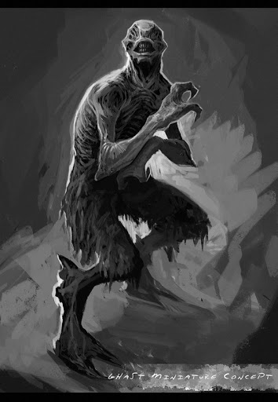

Возле кладбища ужасных гугов, где высятся огромные монолиты надгробий, мрачно зияет черный вход в с склепы Зин, в лабиринтах которых обитают ужасные гасты, не выносящие дневного света. В серых сумерках эти твари, грязные и уродливые, размером с небольшую лошадь, выбираются из укрытия и, подпрыгивая по-кенгуриному на своих лапах с тяжелыми острыми копытами, проворно передвигаются по лабиринтам. Их мерзкие морды вызывают отвращение своим сходством с человеческим лицом — лишенным лба, носа и других важных черт, но наделенным парой хищных красно-желтых глаз.
Несмотря на отсутствие носа, гасты обладают острым обонянием, благодаря чему в темноте хорошо чуют жертву, на которую без промедления нападают целыми стаями, нанося смертоносные удары копытам и вгрызаясь отвратительными зубами. Между собой гасты переговариваются при помощи кашляющих гортанных звуков, но при этом остаются примитивными настолько, что не отличают гулей от гугов и могут напасть даже на себе подобных.
Придуманы Г. Ф. Лавкрафтом для повести «Сновидческие искания неведомого Кадата» (The Dream-Quest of Unknown Kadath, 1927).
